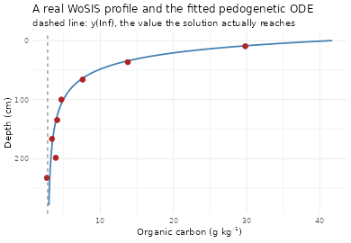

Pilar 2 — Physics-Informed ML for Soil Depth Profiles
Hugo Rodrigues
Source:vignettes/pilar2-piml-profile.Rmd
pilar2-piml-profile.RmdAbstract
Classical Digital Soil Mapping harmonises horizon observations via
equal-area quadratic splines (Bishop et al. 1999; Malone et al. 2009) — a purely
mathematical object disconnected from pedogenesis. The Pillar
2 of edaphos replaces that spline with two
Physics-Informed Machine Learning (PIML) (Raissi et al. 2019; Karniadakis et al. 2021; Willard et al. 2022) models of
the soil depth profile: a parametric pedogenetic Ordinary Differential
Equation (ODE), solved in closed form and fitted through a
horizon-average observation operator, and a Neural ODE (Chen et al.
2018) trained by back-propagation through a fixed-step
Runge-Kutta integrator on torch (Falbel and Luraschi 2023). Both
models are demonstrated on the aqp::sp4 reference pedons
and a hierarchical covariate-conditioned extension closes the loop with
Pillar 5.
1. Pedogenetic ODE
Let denote a soil property (e.g. clay fraction, SOC) at depth . The one-dimensional kinetic model of translocation (Jenny 1941; Minasny and McBratney 2016) assumes a depth-dependent relaxation towards an equilibrium coordinate with rate — a coordinate that, as Section 1 shows below, the solution does not reach: Parameters carry explicit physical meaning: is the surface pedogenetic rate; controls how quickly that rate decays with depth; and is the surface intercept.
needs care, because it is not the value the profile
reaches. Equation (1) is separable and its solution is
so, with
,
.
Because the rate
decays with depth, the profile traverses only a fraction
of the
gap and then stops.
is an equilibrium coordinate of the differential equation; the
parent-material extrapolation is
,
and the two can differ in sign. The fit is carried out in the
identified, positive coordinates
,
with
and
recovered for reporting. The implementation
[piml_profile_fit()][piml_profile_fit] evaluates (2)
directly — the equation has a solution, so integrating it numerically is
only slower and less accurate — and minimises
with Nelder–Mead from several starting
points. Two details matter. The forward operator
is the model’s average over the horizon
,
by Gauss–Legendre quadrature on (2), rather than a point evaluation at
the mid-depth — a laboratory value is a layer average, which is the same
observation-operator issue the equal-area spline literature addresses
(Bishop et al.
1999; Malone et al. 2009). And
the Tikhonov term is centred on the data-driven start
:
on log coordinates an uncentred penalty shrinks every concentration
toward 1, and in earlier versions, applied to the raw
,
it scaled with the square of the property’s units and silently did part
of the fitting.1
2. Dataset — aqp::sp4
We use the ten reference pedons of aqp::sp4 with horizon
concentrations of clay, sand, Ca, Mg, K, CEC and CF.
data(sp4, package = "aqp")
sp4$depth <- (sp4$top + sp4$bottom) / 2
head(sp4[, c("id", "name", "top", "bottom", "depth", "clay", "K")])
#> id name top bottom depth clay K
#> 1 colusa A 0 3 1.5 21 0.3
#> 2 colusa ABt 3 8 5.5 27 0.2
#> 3 colusa Bt1 8 30 19.0 32 0.1
#> 4 colusa Bt2 30 42 36.0 55 0.1
#> 5 glenn A 0 9 4.5 25 0.2
#> 6 glenn Bt 9 34 21.5 34 0.3
unique(sp4$id)
#> [1] "colusa" "glenn" "kings" "napa"
#> [5] "san benito" "shasta" "tehama" "mariposa"
#> [9] "mendocino" "shasta-trinity"3. Mono-pedon fit: a real multi-horizon profile
Earlier versions of this vignette fitted the napa pedon
and called it “a canonical argillic-horizon case … converging to a
plateau in the parent material”. It is neither. napa has
two horizons, A (0-6 cm) and Bt (6-20 cm), with clay
15% and 17%: two points for a four-parameter model, no plateau to
converge to, and no bulge. A monotone increase is not an argillic
horizon — an argillic horizon is a clay maximum with depletion
above and below it, and equation (1) is monotone by construction, so it
cannot represent one at all (Section 4).
We therefore fit a real multi-horizon profile from the WoSIS extract
the package ships: 1,105 Cerrado profiles with four or more horizons,
built by data-raw/piml_wosis_multihorizon.R from the cached
ISRIC WFS layers. Horizon boundaries are known, so the model is matched
to the layer average of each horizon rather than to a point at its
mid-depth.
W <- readRDS(system.file("extdata", "piml_wosis_cerrado.rds",
package = "edaphos"))
# the deepest, most completely described profile inside the model's domain
cand <- W$profiles[W$profiles$monotone_decreasing, ]
cand <- cand[order(-cand$n_hor, -cand$z_max), ]
pedon <- W$horizons[W$horizons$profile_id == cand$profile_id[1], ]
pedon <- pedon[order(pedon$top), ]
pedon[, c("top", "bottom", "soc_g_kg")]
#> top bottom soc_g_kg
#> 6393 0 12 28.9
#> 5704 12 35 17.4
#> 979 35 60 13.6
#> 7216 60 100 10.0
#> 5567 100 150 8.5
#> 842 150 250 6.7
#> 6328 250 350 5.1
#> 6097 350 450 3.7
#> 2565 450 550 2.3
fit_pedon <- piml_profile_fit(
depths = pedon$depth_mid,
values = pedon$soc_g_kg,
top = pedon$top,
bottom = pedon$bottom
)
fit_pedon
#> <edaphos_piml_profile>
#> dy/dz = -lambda0 * exp(-mu*z) * (y - y_inf)
#> lambda0 = 0.009613 mu = 0.004151
#> y0 = 23.45 y(Inf) = 1.982 (kappa = 2.32)
#> y_inf = -0.3678 (ODE coordinate, not the attained value)
#> n obs = 9 (layer) rmse = 2.517
#> converged = TRUEThe printed object separates two things the package used to conflate:
y(Inf), the value the profile actually reaches, and
y_inf, a coordinate of the differential equation that it
does not. It also reports kappa, the fraction of the
journey the profile completes.
grid_z <- seq(0, max(pedon$bottom) * 1.1, by = 1)
pred_pedon <- data.frame(depth = grid_z,
soc = predict(fit_pedon, grid_z))
library(ggplot2)
ggplot() +
geom_line(data = pred_pedon, aes(soc, depth),
linewidth = 1, colour = "steelblue") +
geom_point(data = pedon, aes(soc_g_kg, depth_mid),
size = 3, colour = "firebrick") +
geom_vline(xintercept = edaphos:::.piml_asymptote(fit_pedon$params),
linetype = 2, colour = "grey40") +
scale_y_reverse() +
labs(x = expression(paste("Organic carbon (g kg"^-1, ")")),
y = "Depth (cm)",
title = "A real WoSIS profile and the fitted pedogenetic ODE",
subtitle = "dashed line: y(Inf), the value the solution actually reaches") +
theme_minimal(base_size = 12)
4. Multi-pedon diagnostics
Fitting the full sp4 dataset recovers an interpretable
table where every row has a direct pedological meaning.
fits <- piml_profile_fit_group(
sp4, id = "id", depth = "depth", value = "clay"
)
tab <- do.call(rbind, lapply(names(fits), function(k) {
p <- fits[[k]]$params
data.frame(
pedon = k,
lambda0 = signif(p$lambda0, 3),
mu = signif(p$mu, 3),
kappa = signif(p$kappa, 3),
y0 = signif(p$y0, 3),
# the value the profile reaches -- NOT y_inf, which is reported
# alongside it to show how far apart the two can be
y_attain = signif(edaphos:::.piml_asymptote(p), 3),
y_inf = signif(p$y_inf, 3),
rmse = signif(fits[[k]]$rmse, 3)
)
}))
tab
#> pedon lambda0 mu kappa y0 y_attain y_inf
#> log_kappa colusa 0.00441 0.00333 1.3200 19.900 181.0 239.0
#> log_kappa1 glenn 0.05900 0.02330 2.5400 20.100 40.3 42.1
#> log_kappa2 kings 0.03210 0.00887 3.6200 0.124 52.1 53.5
#> log_kappa3 mariposa 1.02000 0.01210 84.0000 40.800 29.5 29.5
#> log_kappa4 mendocino 0.42000 0.03680 11.4000 7.870 23.1 23.1
#> log_kappa5 napa 0.10100 0.03860 2.6100 13.800 18.4 18.8
#> log_kappa6 san benito 0.07720 0.03080 2.5100 6.750 26.0 27.7
#> log_kappa7 shasta 0.00010 0.02330 0.0043 14.000 14.0 14.0
#> log_kappa8 shasta-trinity 0.02500 0.01530 1.6400 18.700 102.0 123.0
#> log_kappa9 tehama 0.01680 0.02560 0.6560 21.800 50.9 82.2
#> rmse
#> log_kappa 3.55e+00
#> log_kappa1 1.35e-02
#> log_kappa2 1.72e+00
#> log_kappa3 2.95e+00
#> log_kappa4 8.20e-02
#> log_kappa5 3.17e-03
#> log_kappa6 2.80e-02
#> log_kappa7 3.55e-15
#> log_kappa8 1.58e+00
#> log_kappa9 1.03e+00Read this table with y_attain — the value the profile
reaches — and not y_inf. On colusa and
tehama the two differ by orders of magnitude, and both are
absurd: those pedons have three or four horizons, all in the top 42 cm,
with clay still rising at the deepest one. There is simply no
information in them about where the argillic horizon levels off, so the
curve is fitted through the observations and then points off to nowhere.
print() flags exactly these two, reporting how far down the
journey the deepest horizon actually got:
vapply(fits, function(f) f$progress, numeric(1))
#> colusa glenn kings mariposa mendocino
#> 0.1893752 0.6859613 0.5464827 1.0000000 0.9967878
#> napa san benito shasta shasta-trinity tehama
#> 0.6933642 0.6361349 1.0000000 0.5770621 0.3204463On neither flagged pedon does the four-parameter equation improve on a two-parameter straight line (next section: 3.018 against 3.016, and 0.839 against 0.836), which is the right outcome — the model should not be credited for a shape it did not determine.
5. Non-physical baselines
Two baselines bound the improvement claim: the mean predictor and the linear-in-depth regression. A meaningful PIML gain should come from the physical constraint, not from extra parameters.
baseline_rmse <- function(sub, target) {
y <- sub[[target]]
c(mean = sqrt(mean((y - mean(y))^2)),
linear = sqrt(mean(stats::residuals(
stats::lm(y ~ sub$depth))^2)))
}
bench <- do.call(rbind, lapply(split(sp4, sp4$id), function(sub) {
bl <- baseline_rmse(sub, "clay")
data.frame(pedon = sub$id[1],
piml = fits[[sub$id[1]]]$rmse,
mean_baseline = bl["mean"],
linear_baseline = bl["linear"])
}))
bench
#> pedon piml mean_baseline linear_baseline
#> colusa colusa 3.548319e+00 12.871966 3.0163775
#> glenn glenn 1.352830e-02 4.500000 0.0000000
#> kings kings 1.718484e+00 9.797959 2.5628166
#> mariposa mariposa 2.949986e+00 3.112475 2.7467763
#> mendocino mendocino 8.202878e-02 4.320494 2.5935243
#> napa napa 3.165961e-03 1.000000 0.0000000
#> san benito san benito 2.799550e-02 3.500000 0.0000000
#> shasta shasta 3.552714e-15 0.000000 0.0000000
#> shasta-trinity shasta-trinity 1.575534e+00 16.697305 3.0480840
#> tehama tehama 1.034476e+00 3.559026 0.83607966. Neural ODE variant
For profiles where the mono-asymptotic prior is violated — illuviated
bulges, E horizons beneath A, buried paleosols — edaphos
offers a Neural ODE alternative (Chen et al. 2018):
The forward map is a fixed-step RK4
integrator written directly in torch, so training
back-propagates the squared-error loss through the whole trajectory:
nn_fit <- piml_neural_ode_fit(
depths = pedon$depth_mid, values = pedon$soc_g_kg,
hidden = c(16L, 16L), epochs = 500L,
seed = 1L, verbose = FALSE
)
nn_fit
pred_nn <- data.frame(depth = grid_z,
soc = predict(nn_fit, grid_z))
ggplot() +
geom_line(data = pred_pedon, aes(soc, depth,
colour = "Parametric ODE"), linewidth = 1) +
geom_line(data = pred_nn, aes(soc, depth,
colour = "Neural ODE"), linewidth = 1) +
geom_point(data = pedon, aes(soc_g_kg, depth_mid),
size = 3, colour = "firebrick") +
scale_y_reverse() +
scale_colour_manual(values = c("Parametric ODE" = "steelblue",
"Neural ODE" = "darkgreen")) +
labs(x = expression(paste("Organic carbon (g kg"^-1, ")")),
y = "Depth (cm)", colour = NULL,
title = "Parametric vs. Neural ODE on the same real profile") +
theme_minimal(base_size = 12)7. Pillar 2 × Pillar 5 — the physics gate
Given a PIML fit (parametric or neural), the helper
[al_physics_gate_piml()][al_physics_gate_piml] constructs a
rejection function: candidates whose predicted target falls outside the
range the solution actually spans,
,
inflated by a safety_factor, are eliminated from the greedy
Active-Learning selection (see the Pillar 5 vignette). The envelope used
to be built from
,
which is not a value any profile reaches and is often negative: on 300
real WoSIS pedons the gate then accepted an organic carbon of
g/kg on 73 of them. It now floors at zero for a property the fit itself
requires to be positive.
gate <- al_physics_gate_piml(fit_pedon, safety_factor = 1.2)
cand_dummy <- data.frame(dummy = 1:4)
gate(cand_dummy, predicted_mean = c(10, 25, 200, -5))A hierarchical extension
([piml_hierarchical_fit()][piml_hierarchical_fit]) jointly
fits a covariate-conditioned Neural ODE across pedons, delivering a
per-location envelope that
[al_physics_gate_piml_hierarchical()][al_physics_gate_piml_hierarchical]
feeds back into Pillar 5.
8. Bayesian posterior over the ODE parameters
[piml_profile_fit()][piml_profile_fit] returns a single
point estimate. For any honest downstream use — propagating parametric
uncertainty into a SOC-stock prediction, tuning a Pillar 5
Active-Learning acquisition under correct epistemic variance, reporting
publishable parameter intervals — we need the posterior
,
not just the MAP.
The function
[piml_profile_fit_bayesian()][piml_profile_fit_bayesian]
returns that posterior through two nested approximations:
- Laplace approximation (default, O(ms) per pedon). Gaussian posterior whose mean is the MAP and whose covariance is the inverse observed Fisher information at the MAP (Bishop 2006, sec. 4.4). Accurate when the posterior is well-identified; every call pre-samples 2 000 draws from for predictive convenience.
- Adaptive random-walk Metropolis (Haario et al. 2001) (~seconds per pedon). Proposal covariance starts at the Laplace covariance, scaled by the Roberts–Gelman–Gilks optimal factor , and is updated online by Haario recursion after a warm-up period — so non-Gaussian or multimodal posteriors are captured faithfully where Laplace would paper over them.
Which to use, measured rather than asserted. On the WoSIS pedon the manuscript reports (1115679, nine horizons to 550 cm, lognormal family, horizon-average operator, same seed), the two paths were compared parameter by parameter. Five of the seven 95% intervals are narrower under Laplace — and by more than a factor of two, the observation noise by 1.8, so its coefficient of variation reads 0.168 against 0.230 from the sampler.
The split is not arbitrary. The attainable deep value , which these data identify, is essentially unchanged (width ratio 1.01), and is actually wider under Laplace. What moves is what is not identified. The derived has a pole at ; the sampler puts 5.3% of its draws below and reaches 0.080, while Laplace puts 0.5% there and stops at 0.285. Conditioning both on brings them into agreement.
So the practical rule is the one the description above already implies, now with a measurement behind it: Laplace is fine for the identified coordinates and for anything you intend to use as a point estimate, and it is not fine for a derived quantity whose map is unstable in a tail it cannot reach. The package’s reported numbers use MCMC.
library(edaphos)
depths <- c(5, 15, 30, 60, 100)
values <- c(25, 18, 12, 8, 6.5)
fit_bayes <- piml_profile_fit_bayesian(depths, values,
method = "laplace", seed = 1L)
fit_bayes
#> <edaphos_piml_bayes>
#> method : laplace
#> n draws : 2000
#> sigma (noise): 0.009692
#> posterior summary (natural scale):
#> parameter mean sd q2.5 q50 q97.5
#> lambda0 0.03740 0.012180 0.018942 0.035352 0.06675
#> mu 0.03509 0.005514 0.025552 0.034733 0.04736
#> y_inf -10.64234 11.818452 -41.257663 -8.089489 3.62039
#> y0 30.98891 0.602453 29.837477 31.006206 32.15824
#> kappa 1.14603 0.571184 0.399185 1.016122 2.59166
#> y_asym 6.05674 0.177663 5.707088 6.056401 6.41648
#> sigma 0.01029 0.003757 0.004745 0.009672 0.01924
predict(fit_bayes,
newdepths = c(10, 20, 40, 80),
interval = 0.95,
include_obs_noise = TRUE,
seed = 1L)
#> depth mean sd lower upper lower_sim upper_sim
#> 1 10 20.589711 0.5581681 19.319254 21.293824 18.788348 21.458065
#> 2 20 15.054671 0.5770224 13.482066 15.709122 12.862055 15.794151
#> 3 40 9.883594 0.3760792 8.874115 10.306881 8.553220 10.379022
#> 4 80 6.905800 0.1433822 6.555402 7.121222 6.436077 7.160627include_obs_noise = TRUE adds Gaussian observation noise
with the MAP-estimated
onto every predictive draw, so the returned interval represents the
predictive distribution of a future observation rather than the
uncertainty on the mean function alone.
For the Neural-ODE variant the variational analogue is a deep
ensemble (Lakshminarayanan et al.
2017): K independent networks trained from
different random seeds produce an empirical posterior whose mean and
variance approximate the Bayesian predictive posterior (Wilson and Izmailov
2020).
ens <- piml_neural_ode_fit_ensemble(depths, values,
K = 5L, epochs = 300L, seed = 1L)
predict(ens, newdepths = c(10, 20, 40, 80), interval = 0.9)9. Discussion and roadmap
The parametric ODE is mono-asymptotic and therefore optimal for properties that decay monotonically toward a parent-material value (SOC, some nutrients) but suboptimal for bimodal profiles, which the Neural ODE handles by construction. Three complementary directions remain on the roadmap:
- Mass-conservation soft constraints — augment the Neural ODE loss with a term penalising deviations from an integrated mass balance (Minasny et al. 2017).
- Adjoint-method Neural ODE — for pedons deeper than 2 m, the back-propagation graph becomes memory-bound; the adjoint method of (Chen et al. 2018) eliminates that scaling.
-
Hierarchical Bayesian pooling — extending
[
piml_hierarchical_fit()][piml_hierarchical_fit] to the posterior regime that [piml_profile_fit_bayesian()][piml_profile_fit_bayesian] already exposes for single pedons, with covariate-conditioned priors over .